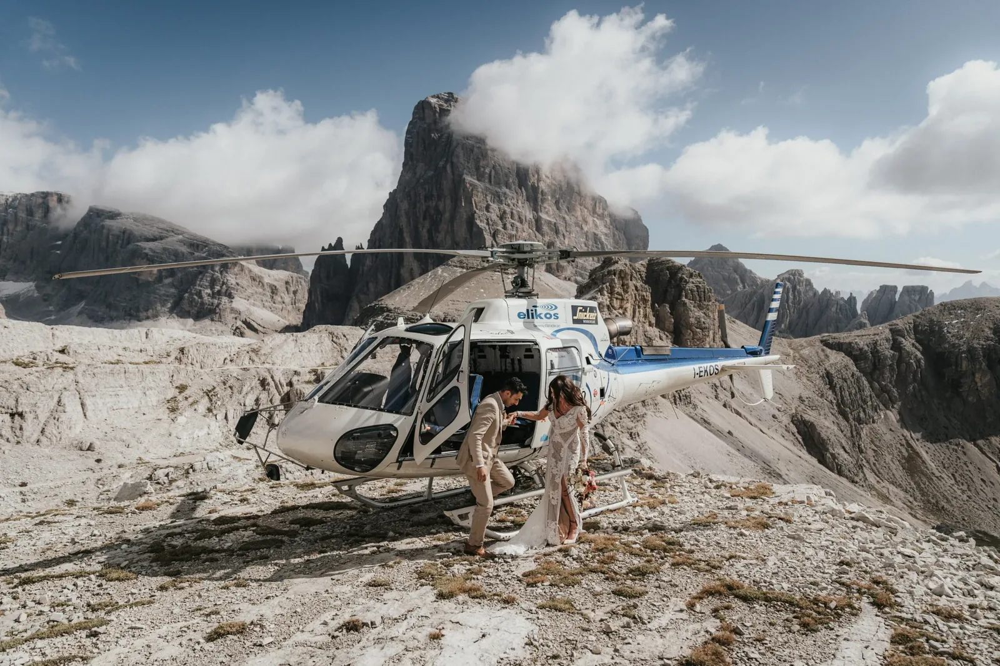
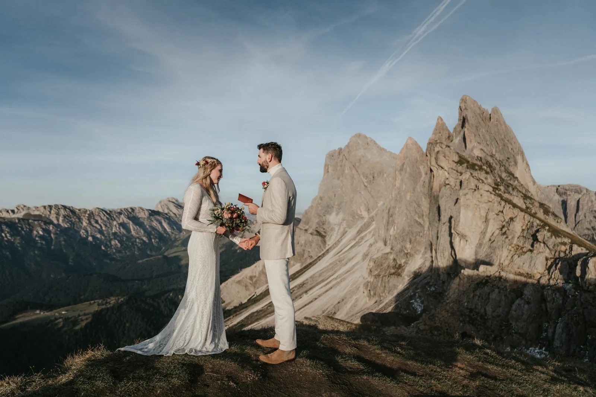

Mountain Elopement
Euer perfektes Elopement gestalten
Intime Berghochzeiten in den Dolomiten/Alpen — nur ihr beide, ein Gipfel und eine Geschichte, die es zu erzählen lohnt.
Eure Geschichte beginnen
Intime Berghochzeiten in den Dolomiten/Alpen — nur ihr beide, ein Gipfel und eine Geschichte, die es zu erzählen lohnt.
Eure Geschichte beginnento elope — dem Gewöhnlichen entfliehen und dort heiraten, wo die Welt still wird.
Wir gestalten intime Hochzeiten, die eure einzigartige Liebesgeschichte widerspiegeln. Wenn ihr auf große Locations und lange Gästelisten verzichten wollt, seid ihr bei uns richtig. Wir feiern Individualität und weben zeitlose Romantik in jedes Elopement.
Von kristallklaren Seen über schneebedeckte Gipfel bis zu stillen Almwiesen — unsere handverlesenen Orte in ganz Europa passen zu eurer Vision, und wir begleiten euch bei jedem Schritt.
So funktioniert’s →
Planung, Genehmigungen, Blumen, Torte, Zeremonie, Foto und Film — ein lokales Team, ein Ansprechpartner. Ihr kommt an, um alles andere haben wir uns gekümmert.
Vom Helikopter-Elopement über den Dolomiten bis zu handverlesenen Orten, die mit der Seilbahn erreichbar sind: Wir schaffen atemberaubende Tage für Paare, die das Gipfelgefühl wollen — mit oder ohne sechsstündige Wanderung.
Als Österreicher wissen wir, wie eure Berghochzeit rechtsgültig wird — mit einem Standesbeamten am Gipfel. Echte Zeremonie, echte Urkunde, echte Berge. (Symbolische Zeremonien in den italienischen Dolomiten sind natürlich genauso schön.)
Ein kleines, lokales Team, daheim zwischen Innsbruck und den Dolomiten — Plannerin Jlenia, Fotograf Andreas und Filmerin Stefanie. Ausgezeichnet: Way Up North Awards 2024.
Unsere Planungspartnerin in den Dolomiten — Logistik, Genehmigungen, Unterkunft und jedes Detail vor Ort geregelt, damit ihr einfach nur da sein könnt. Mit jahrelanger Erfahrung und inmitten der Dolomiten aufgewachsen, kennt sie jeden Stein — das sorgt für eine herrlich entspannte Atmosphäre.
Dolomites Wedding Planner →Gründer und leitender Fotograf — Tiroler, daheim zwischen Innsbruck und den Dolomiten. Ausgezeichnet (Way Up North Awards 2024), veröffentlicht im Rangefinder. Andreas führt jedes Paar ins richtige Licht und hält den Tag so fest, wie er sich wirklich anfühlt.
Blitzkneisser →"Ihr lokales Wissen war unbezahlbar. Sie empfahlen den perfekten Gipfel und machten unseren magischen Tag wirklich unvergesslich."
Echte Fünf-Sterne-Bewertungen von Paaren, die wir in den Bergen getraut haben.
We cannot express how amazing the Mountain Elopement team were from start to finish — taking care of every little detail to make our day the most magical it could be. The day, location and photos all surpassed our expectations.
Wow. I am speechless. We decided to elope on our vacation in Italy and the photos are AMAZING. Andy is such a charismatic and wonderful soul — we highly recommend the Blitzkneissers!
An amazing team from start to finish. They woke up at 1am, showed up with all smiles, and were an amazing group of humans to spend such a magical day with.
Absolute Empfehlung! Wir hätten uns keine bessere fotografische Begleitung für unser Sunrise-Elopement vorstellen können. Andreas ist ein herausragender Fotograf.
I wish there were more stars we could give. Our day was perfect and so much fun — everyone made us feel so comfortable. We highly recommend Mountain Elopement, especially in the Dolomites.
We chose them for the aesthetic of their photographs — a pleasant surprise that they are so friendly and chill, while guiding us professionally. Couldn’t have asked for a more perfect crew!
Eine Hochzeit in Bergen zu buchen, die man noch nie betreten hat, verlangt Vertrauen. Unsere Arbeit wurde über die Jahre ausgezeichnet und veröffentlicht — von Menschen, auf deren Urteil sich Paare verlassen.
Wir verwenden Cookies für anonyme Statistik (Google Analytics über Google Tag Manager), um die Website zu verbessern. Die Analyse läuft nur mit deiner Einwilligung. Datenschutz